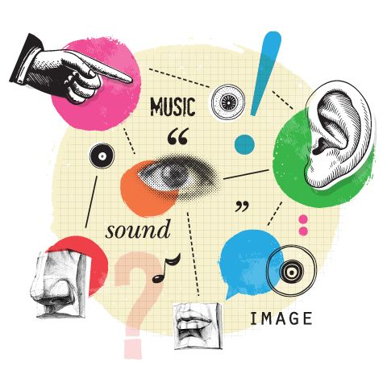
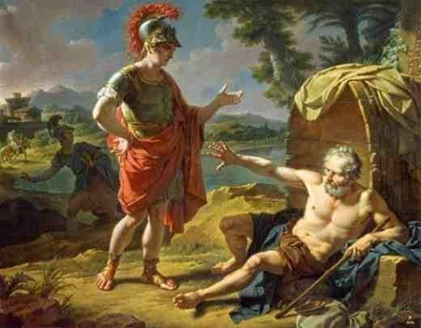
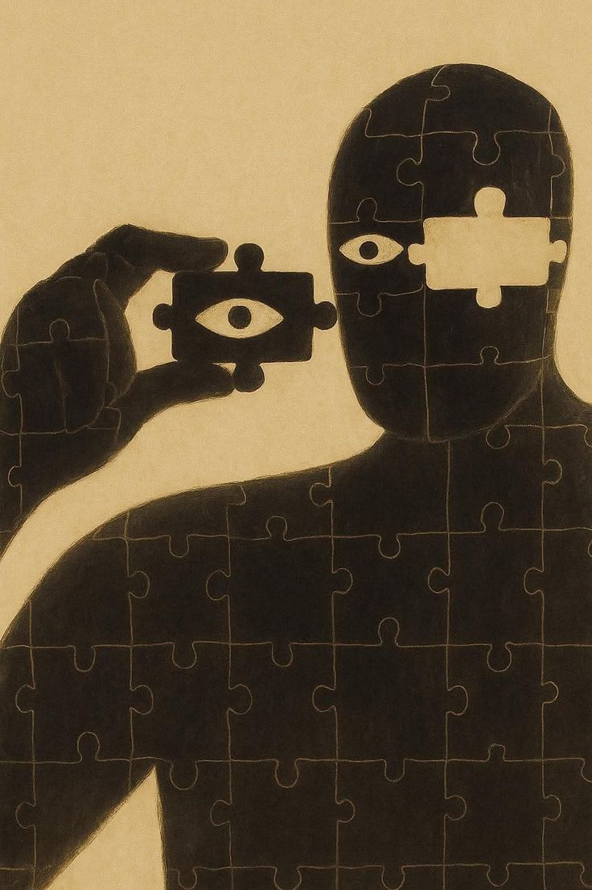

The branch of philosophy that asks what we can truly know — how
knowledge is possible, when our beliefs are justified, how evidence
supports our conclusions, and where the boundaries of human
understanding lie.
What is Epistemology?
Epistemology is the branch of philosophy concerned with knowledge,
belief, justification, evidence, and rational inquiry. It asks what
knowledge is, how human beings acquire it, what makes a belief
rationally justified, and whether there are genuine limits to what we
can know. The subject is not restricted to abstract philosophical
puzzles: whenever we ask whether a scientific conclusion is supported by
evidence, whether a witness is trustworthy, whether a memory is
reliable, or whether an argument gives us good reason to accept its
conclusion, we are engaging with epistemological questions.

Epistemology begins with questions about perception and experience,
but quickly asks how far the senses can be trusted as sources of
knowledge.
The word epistemology comes from the Greek epistēmē,
commonly translated as knowledge, and logos, meaning account,
explanation, or study. Philosophical discussions of knowledge are much
older than the word itself. Plato, Aristotle, the ancient skeptics, and
later philosophers all investigated the distinction between knowledge,
appearance, belief, and error. The English philosophical term
"epistemology" is generally associated with the Scottish philosopher
James Frederick Ferrier, who used it in his 1854
Institutes of Metaphysic to designate the theory of knowing.
The modern discipline therefore has ancient roots even though its name
and specialized terminology are relatively recent.
Much of what human beings believe they know comes through books,
education, testimony, institutions, and traditions rather than direct
personal observation.
A central concern of epistemology is the difference between merely
having a true belief and actually knowing something. A person may
accidentally believe something that happens to be true, but philosophers
have traditionally argued that knowledge requires more than fortunate
correctness. This led to the influential analysis of knowledge in terms
of justified true belief: a person knows a proposition when the
proposition is true, the person believes it, and the belief is
appropriately justified. Twentieth-century counterexamples associated
with Edmund Gettier showed, however, that justified true belief can
sometimes be true because of luck, creating the famous Gettier problem
and prompting competing theories of knowledge.
Epistemology therefore investigates both successful and unsuccessful
cognition. It examines perception, memory, reasoning, introspection,
testimony, inference, evidence, and intellectual virtues, while also
studying error, prejudice, deception, bias, disagreement, and
misinformation. It asks not only whether a belief is true, but whether
the believer has adequate grounds for holding it. This distinction is
crucial because a belief can be reasonable yet false, or true yet
insufficiently supported. Epistemology studies the standards by which
beliefs become rationally defensible and the conditions under which
cognitive success deserves to be called knowledge.
Core Questions Epistemology Asks
Epistemology revolves around a family of connected questions concerning
knowledge, truth, evidence, certainty, and rational belief. Some
questions are conceptual, such as what distinguishes knowledge from
belief. Others are normative, asking what a person ought to believe
given the evidence available to them. Still others are skeptical,
challenging whether our ordinary claims to knowledge can survive
sufficiently powerful arguments for doubt.
The fundamental epistemological question is simple but difficult: how
do you know that what you believe is actually true?
What is knowledge? What distinguishes knowledge from
belief, opinion, assumption, or a lucky guess?
What is truth? Must knowledge correspond to reality,
or can truth be understood through coherence, successful inquiry, or
other philosophical approaches?
What justifies a belief? What makes evidence or
reasons strong enough to rationally support a conclusion?
Where does knowledge come from? Do perception,
reason, memory, introspection, and testimony provide genuine sources
of knowledge?
Can we know anything with certainty? Is certainty
required for knowledge, or can knowledge exist even when error remains
possible?
How should we respond to skepticism? Can skeptical
arguments about dreams, deception, the external world, or other minds
be answered without abandoning ordinary knowledge?
How should beliefs be formed? Should rational belief
depend primarily on accessible evidence, reliable cognitive processes,
intellectual virtues, or some combination of these?
Can knowledge be social? How much of what we know
depends upon other people, institutions, experts, communities, and
testimony?
History of Epistemology
Questions about knowledge are ancient. Greek philosophers investigated
the distinction between knowledge and opinion, the possibility of
certainty, the reliability of perception, and the role of reason in
reaching truth. Plato's dialogues repeatedly examine what it means to
know something, especially through contrasts between
epistēmē and doxa, knowledge and opinion. Aristotle
subsequently developed systematic accounts of demonstration, scientific
knowledge, perception, reasoning, and the intellectual capacities
through which human beings understand the world.

René Descartes used systematic doubt to investigate whether knowledge
could be grounded in beliefs resistant to skeptical challenge.
Ancient skepticism, particularly the traditions associated with
Pyrrhonism and Academic skepticism, provided another major strand in the
history of epistemology. Skeptical philosophers questioned whether human
beings could establish the certainty claimed by competing schools of
thought. Their arguments later influenced early modern discussions of
doubt and certainty. During the medieval period, philosophers such as
Augustine, Avicenna, Anselm, and Thomas Aquinas developed sophisticated
accounts of knowledge, perception, intellect, certainty, and the
relationship between human cognition and reality.
Early modern philosophy transformed epistemological debate. Descartes
sought an indubitable foundation through methodological doubt; John
Locke investigated the origin, extent, and limits of human
understanding; George Berkeley questioned assumptions about material
substance; and David Hume developed powerful skeptical arguments
concerning causation, induction, and the limits of reason. Their work
helped establish epistemology as a central concern of modern philosophy
rather than merely one topic among many.
Immanuel Kant responded to the tensions between rationalism and
empiricism by arguing that knowledge requires both sensory experience
and structures supplied by the mind. His project transformed subsequent
discussions of experience, reason, objectivity, and the limits of
metaphysical knowledge. In the nineteenth century, epistemological
questions continued through idealism, empiricism, positivism, and other
movements. Ferrier's 1854
Institutes of Metaphysic helped establish the term
"epistemology" in philosophical English.
Twentieth-century analytic philosophy brought renewed attention to the
analysis of knowledge, justification, perception, language, and
skepticism. G. E. Moore and Bertrand Russell examined knowledge and the
external world; logical positivists emphasized verification and
scientific language; Gettier's 1963 paper challenged the traditional JTB
analysis; and later philosophers developed foundationalist, coherentist,
reliabilist, contextualist, externalist, and virtue-theoretic
approaches. Contemporary epistemology has expanded further into social
epistemology, feminist epistemology, formal epistemology, epistemology
of science, disagreement, testimony, memory, perception, and the
epistemic problems created by modern information technologies.
What Is Knowledge?
Philosophers distinguish several forms of knowledge, but epistemology
has traditionally focused especially on
propositional knowledge: knowledge that something is the case.
For example, knowing that water freezes under certain conditions,
knowing that Jaipur is in Rajasthan, or knowing that a particular
historical event occurred are all examples of propositional knowledge.
This differs from knowledge-how, such as knowing how to ride a
bicycle, and from knowledge acquired through direct acquaintance with a
person or object. These distinctions matter because different kinds of
knowledge may require different explanations.
The traditional philosophical analysis of propositional knowledge
distinguishes three important elements: belief,
truth, and justification. If a person
does not believe a proposition, it is difficult to describe that person
as knowing it. If the proposition is false, ordinary factual knowledge
cannot consist simply in believing it. Justification explains why
knowledge seems to require more than accidental correctness. Someone who
randomly guesses the correct answer may have a true belief, but the
truth of the belief does not necessarily result from a sufficiently good
epistemic connection to the fact.
This traditional framework is often called the
justified true belief or JTB analysis.
It is important to understand that contemporary epistemology does not
simply accept JTB as a complete definition of knowledge. Gettier cases
demonstrated that a person can possess a justified true belief while the
truth of that belief depends upon an epistemically relevant accident.
Philosophers have responded by proposing additional conditions,
modifying the concept of justification, developing reliabilist and
virtue-based accounts, or rejecting the project of defining knowledge in
terms of a simple list of necessary and sufficient conditions.
The resulting distinction between knowledge and epistemic luck remains
one of the central problems in contemporary epistemology. If someone
reaches a true conclusion for reasons that normally provide excellent
evidence, but circumstances make the conclusion true in an unexpected
way, should that person count as knowing? Questions of this kind show
why epistemology is not merely about collecting true information. It
investigates the relationship between a person, their evidence, their
cognitive processes, and the reality that makes their beliefs true.
What Is the Gettier Problem?
The Gettier problem is one of the most important
developments in twentieth-century epistemology. In his brief 1963 paper
Is Justified True Belief Knowledge?, Edmund Gettier presented
cases in which a person appears to have a justified true belief but does
not seem to possess knowledge because the belief is true through luck.
The examples challenged the assumption that adding justification to true
belief is sufficient to explain knowledge.
The basic structure of a Gettier case is straightforward. A person has
strong evidence for a proposition, reasonably infers another proposition
from it, and the resulting belief turns out to be true. However, the
original evidence is connected to a false assumption or an unexpected
circumstance, so the final belief is true for reasons that are partly
accidental. The person therefore appears epistemically justified and
correct while lacking the kind of non-accidental connection to truth
that knowledge seems to require.
The philosophical importance of Gettier cases extends far beyond the
original examples. They forced epistemologists to reconsider whether
knowledge can be captured through a simple definition consisting of a
few individually necessary conditions. Some responses add a fourth
condition designed to exclude epistemic luck; others develop theories of
knowledge based on reliable belief-forming processes, intellectual
virtues, safety, sensitivity, or a direct factive relationship between
the knower and the known proposition. The debate remains active because
different theories appear to handle different forms of epistemic luck
with varying success.
How Do We Know What We Know?
Human beings acquire beliefs through several interconnected epistemic
sources. Perception gives us information about our surroundings; memory
allows previously acquired information to remain available; reasoning
allows us to derive conclusions from premises; introspection provides
access to certain features of our own mental lives; and testimony allows
us to learn from other people. None of these sources is simply
infallible. Epistemology therefore asks what makes each source capable
of providing justification and under what conditions it becomes
unreliable.
Testimony allows individuals to acquire knowledge from other people,
making human knowledge deeply social as well as individual.
Perception is one of the most fundamental sources of
empirical belief. Seeing a tree, hearing music, or feeling the surface
of an object normally gives us reason to believe that something is
present in the environment. Yet perception can be affected by illusion,
hallucination, poor lighting, attention, expectation, and other
conditions. The epistemological problem is therefore not simply whether
the senses can be trusted, but how perceptual experience can provide
justification for beliefs about a world that exists independently of the
individual perceiver. Contemporary epistemology of perception
investigates precisely this relationship between experience, perceptual
belief, and the external world.
Reason enables us to draw conclusions that are not
simply copied from immediate experience. Logical reasoning can show that
certain conclusions follow from premises, while mathematical reasoning
can establish relationships that do not depend upon observing every
relevant instance. Memory, meanwhile, allows knowledge
acquired in the past to continue influencing present belief, although
memories can be distorted, forgotten, reconstructed, or influenced by
later information. Introspection concerns knowledge of
one's own mental states, such as being in pain or having a particular
conscious experience. Each source raises distinctive epistemological
questions about reliability, evidence, access, and error.
Testimony is especially important because no individual
can personally investigate more than a tiny fraction of what they
believe. Historical knowledge, scientific information, geographical
facts, technical expertise, and everyday information are overwhelmingly
dependent upon what other people communicate. Philosophers therefore ask
whether testimony is an independent source of justification or whether
its epistemic authority must ultimately be reduced to perception,
memory, inference, and evidence concerning the speaker's reliability.
Contemporary social epistemology also examines experts, institutions,
collective knowledge, disagreement, and the conditions under which trust
becomes epistemically responsible.
A Priori and A Posteriori Knowledge
One of the most important epistemological distinctions concerns
a priori and a posteriori knowledge. A
priori knowledge is traditionally understood as knowledge or
justification that does not depend upon particular sensory experience,
whereas a posteriori knowledge depends upon experience. Knowledge of a
logical relationship is a standard example used in discussions of a
priori reasoning, while knowledge about the current weather or the
physical location of an object is ordinarily a posteriori.
The distinction does not mean that a priori reasoning is completely
detached from human experience in every possible sense. A person
normally needs language, concepts, education, and intellectual
development before they can understand a mathematical or logical
proposition. The point is instead about the kind of justification
involved in a particular judgment: whether its justification depends
upon empirical evidence concerning how the world happens to be.
Philosophers disagree about how extensive a priori knowledge is and what
its ultimate basis might be.
The distinction became especially significant during early modern
philosophy, when rationalists emphasized reason and empiricists
emphasized experience. Yet the historical picture is more complicated
than a simple opposition. Philosophers such as Descartes, Leibniz,
Locke, Berkeley, Hume, and Kant offered substantially different theories
of reason, experience, concepts, and knowledge. Kant, in particular,
argued that experience supplies essential material for human cognition
while the mind also contributes structures through which experience
becomes intelligible. Contemporary epistemology continues to debate the
relationship between experience, concepts, rational insight, and
empirical evidence.
Rationalism and Empiricism
Rationalism gives a central role to reason in the
acquisition or justification of knowledge. Rationalist philosophers have
often emphasized mathematics, logic, necessary truths, and the
possibility that some knowledge cannot be derived from sensory
experience alone. Descartes, Spinoza, and Leibniz are commonly
associated with rationalist traditions, although their individual
positions differ substantially and should not be reduced to a single
doctrine.
Empiricism emphasizes experience as a fundamental source of human
knowledge, especially knowledge concerning the empirical world.
Empiricism emphasizes experience and observation in the
formation and justification of knowledge. John Locke argued against the
idea that human beings possess a stock of innate ideas in the sense
required by his opponents, while George Berkeley and David Hume
developed distinctive forms of empiricist philosophy. Hume's analysis
became particularly influential because he argued that our expectations
concerning causation and the future cannot be justified simply by
deductive reason.
Rationalism and empiricism are useful labels for understanding important
debates in early modern philosophy, but they should not be treated as a
complete map of epistemology. Many philosophers accept that both
reasoning and experience play essential roles in knowledge. Modern
epistemology also investigates perception, memory, testimony, cognitive
reliability, social practices, scientific methods, and intellectual
virtue in ways that cannot be reduced to the traditional
rationalist-empiricist divide.
What Is Epistemic Justification?
Epistemic justification concerns what makes a belief
reasonable or intellectually warranted from an epistemic point of view.
If someone believes that it will rain because they have checked a
reliable weather forecast and observed relevant atmospheric conditions,
their belief may be well justified even if the forecast eventually turns
out to be wrong. Justification is therefore not identical to truth. A
person can be epistemically responsible in believing something that
later proves false, provided the available evidence genuinely supported
the belief at the time.
This distinction creates an important philosophical problem. What
exactly gives a belief its justification? One possibility is that
justification depends upon other beliefs that provide evidence. But then
those supporting beliefs may themselves require justification. This
produces the famous
epistemic regress problem: if every belief requires
another justified belief to support it, where does the chain of
justification end? Foundationalism, coherentism, and infinitism offer
different answers to this problem.
Epistemologists also distinguish between different conceptions of
justification. Internalist approaches generally
emphasize factors that are accessible to the subject's perspective, such
as evidence or reasons the person can in some sense reflect upon.
Externalist
approaches allow justification or knowledge to depend partly upon
factors outside the subject's reflective awareness, such as whether a
belief-forming process is reliably connected with truth. The
internalism-externalism debate has become one of the central organizing
disputes in contemporary epistemology.
Foundationalism, Coherentism, and Infinitism
Foundationalism argues that the structure of justified
belief includes some foundational beliefs that do not depend upon other
beliefs for their justification in the same way that ordinary
inferential beliefs do. Other justified beliefs can then depend upon
these basic elements. Different foundationalists disagree about what can
serve as a foundation, including perceptual experience, introspective
awareness, or other forms of immediate justification. Foundationalism is
therefore a family of theories rather than one single account of
epistemic foundations.
Coherentism rejects the idea that justification must
ultimately rest upon a privileged foundation. Instead, it emphasizes the
relationships among beliefs within a larger system. A belief may be
justified because it fits coherently with other beliefs, provides
explanatory support, avoids contradiction, and participates in a
mutually supporting network. Coherentism must nevertheless explain why
coherence should be connected with truth rather than merely describing a
consistent but completely mistaken worldview.
Infinitism takes a different approach to the regress
problem by maintaining that justification can involve an indefinitely
extending chain of reasons rather than terminating in basic beliefs or
forming a circular structure. The three positions illustrate how a
seemingly simple question — "Why should I believe this?" — can lead to
fundamental questions about the architecture of rational belief. The
debate is significant because any complete theory of knowledge must
explain how reasons support one another without collapsing into
arbitrary assumption, circularity, or an impossible demand for endless
completed justification.
Reliabilism and Virtue Epistemology
Reliabilism is an influential externalist approach that
evaluates beliefs partly in terms of the reliability of the processes
that produce them. If a cognitive process tends to produce true beliefs
under appropriate conditions, that reliability may contribute to
epistemic justification or knowledge even when the individual cannot
fully explain the reliability of the process. Perception, memory, and
ordinary reasoning can therefore be assessed not only by asking whether
the subject possesses accessible evidence, but also by asking whether
the relevant cognitive mechanism generally tracks truth.
Reliabilism emerged partly as a response to difficulties facing theories
that make knowledge depend entirely upon consciously accessible reasons.
However, reliability alone raises further questions. A process could
produce true beliefs reliably in one environment but not another, and a
person might reach a true conclusion through a reliable process without
possessing the reflective understanding we normally associate with
knowledge. These problems have led philosophers to develop increasingly
sophisticated versions of process reliabilism and related externalist
theories.
Virtue epistemology shifts attention toward the
intellectual abilities and virtues of the knower. Instead of asking only
whether a belief has enough evidence, virtue epistemologists may ask
whether the belief is true because of the competent exercise of an
intellectual ability. Intellectual virtues can include careful
reasoning, intellectual courage, open-mindedness, intellectual humility,
conscientious inquiry, and sensitivity to evidence. Virtue-based
theories therefore connect epistemology with the broader philosophical
question of what it means to be a good thinker and responsible inquirer.
What Is Skepticism in Epistemology?
Philosophical skepticism challenges our ordinary claims
to knowledge or justification. Skeptical arguments can be highly
general, questioning whether knowledge is possible at all, or selective,
targeting particular domains such as the external world, the past, other
minds, induction, perception, or memory. Skepticism should therefore not
be treated as one single doctrine. Different skeptical arguments target
different assumptions about evidence, certainty, inference, and
knowledge.

Skepticism tests the foundations of ordinary belief by asking what
would remain if our most familiar assumptions were placed in doubt.
Descartes famously used radical doubt as a methodological tool. His
thought experiment involving a powerful deceiver asks whether apparently
obvious beliefs could all be mistaken. If an experience would seem
exactly the same whether the external world were normal or whether a
powerful deceiver were systematically misleading us, what evidence could
establish which situation we are actually in? The purpose of the
argument was not simply to encourage permanent doubt, but to discover
whether any beliefs could withstand the most demanding possible
challenge.
Contemporary versions include the
brain-in-a-vat scenario and other skeptical hypotheses
in which a person's experiences are systematically disconnected from the
ordinary world they believe they inhabit. Philosophers respond in
different ways: some attempt to show that skeptical premises are
mistaken, some challenge the standards of evidence assumed by skeptical
arguments, some appeal to contextual differences in knowledge claims,
and others argue that ordinary knowledge does not require the kind of
certainty demanded by radical skepticism. Skepticism remains valuable
because even when its conclusions are rejected, its arguments expose
hidden assumptions in theories of knowledge.
Certainty, Fallibilism, and Epistemic Luck
Certainty is stronger than ordinary justification. A
belief may be highly reasonable without being absolutely immune to
error. This distinction has encouraged many philosophers to defend
fallibilism, the position that a person can possess
knowledge even though it remains logically or epistemically possible
that they are mistaken. On a fallibilist view, demanding absolute
certainty for every instance of knowledge would make ordinary
scientific, historical, and everyday knowledge far more difficult to
recognize than our actual epistemic practices require.
Fallibilism does not mean that evidence is unimportant or that every
belief is equally uncertain. A scientific conclusion supported by
converging evidence, a carefully checked historical claim, and an
unsupported rumor can have radically different epistemic statuses even
though none is absolutely immune from all conceivable error.
Epistemology therefore often distinguishes degrees of confidence,
strength of evidence, and rational justification from the much stronger
notion of infallibility.
Epistemic luck creates a related difficulty. A person
can arrive at a true belief while circumstances happen to make the
belief true in a way that the person's evidence does not adequately
explain. Gettier cases are the classic illustration, but contemporary
epistemologists have developed broader discussions of luck, safety,
sensitivity, accidentality, and epistemic achievement. These debates ask
what kind of connection between belief and truth is strong enough for
genuine knowledge.
Social Epistemology: Knowledge From Other People
Much human knowledge is social. A person knows the date of a historical
event, the location of a distant city, the results of a scientific
study, or the details of a complex technology largely because other
people have communicated the relevant information. This makes
testimony
one of the most important subjects in contemporary epistemology. The
central question is whether testimony itself can serve as a basic source
of justification or whether its credibility must always be supported by
independent evidence about the speaker.
Testimony also introduces questions about expertise and trust. We
routinely rely on specialists because no individual can independently
master every field. A responsible epistemic agent must therefore
determine when reliance on an expert is appropriate, how competing
experts should be evaluated, and what to do when expert communities
disagree. Expertise is not merely a matter of confidence or professional
status; epistemology asks what features make a source genuinely
trustworthy and how a non-specialist can rationally recognize those
features.
Social epistemology extends these questions beyond individual testimony
to institutions, communities, scientific organizations, educational
systems, media environments, and collective inquiry. It examines how
knowledge can be produced or obstructed by social structures.
Philosophers also study
epistemic injustice, including situations in which
people receive less credibility than they deserve or lack access to the
interpretive resources needed to understand and communicate their
experiences. These issues demonstrate that the study of knowledge
concerns not only individual minds but also the social conditions under
which information circulates.
Truth, Evidence, and Rational Belief
Epistemology must distinguish truth from
justification. Truth concerns whether a proposition is
actually the case, while justification concerns whether a person has
adequate epistemic grounds for believing it. These concepts can come
apart: someone can possess excellent evidence and nevertheless be
mistaken, while another person can hold a true belief for a completely
irrational reason. The difference is one reason epistemology cannot
simply define knowledge as whatever beliefs happen to be correct.
Evidence can take many forms. Direct observation may support an
empirical claim; a reliable memory may support a claim about the past;
testimony from a qualified expert may support a specialized claim; and a
valid argument may support a conclusion by showing that it follows from
accepted premises. Epistemologists therefore ask not only whether
evidence exists, but whether it is relevant, sufficiently strong,
appropriately connected to the conclusion, and available under the
circumstances in which the belief is formed.
The relationship between evidence and rational belief is particularly
important because human reasoning is vulnerable to systematic error.
Confirmation bias, motivated reasoning, overconfidence, selective
attention, and misleading testimony can influence belief formation.
Epistemology does not replace empirical psychology, but it provides
conceptual tools for asking what a person ought to believe given the
evidence and whether a cognitive process is epistemically responsible.
Epistemology and Scientific Knowledge
Science provides one of the most important practical settings for
epistemological questions. Scientists collect observations, construct
hypotheses, compare explanations, perform experiments, evaluate
evidence, reproduce results, and revise conclusions. Epistemology asks
why these practices provide reasons for belief and what distinguishes
scientifically responsible inference from unsupported speculation.
The philosophical problem of induction is especially
important. David Hume argued that no deductive argument can establish
that the future must resemble the past simply because past patterns have
been consistent. Yet scientific reasoning constantly relies upon
observations to form expectations about unobserved cases. Philosophers
of science and epistemologists have therefore investigated probabilistic
reasoning, confirmation, explanation, inference to the best explanation,
and competing accounts of scientific rationality.
Scientific knowledge is also an example of socially distributed
knowledge. Individual researchers rely on instruments, published
results, technical expertise, peer criticism, replication, databases,
and the testimony of other specialists. The reliability of science
therefore cannot be reduced to the private certainty of a single
observer. It involves institutional practices designed to identify
error, improve evidence, expose weak reasoning, and make claims publicly
assessable.
Epistemology in the Digital Age
Search engines, social media, online archives, recommendation systems,
and generative artificial intelligence have transformed the practical
conditions under which people acquire beliefs. Information that once
required access to a library or specialist can now appear within
seconds. This expansion of access creates enormous epistemic
opportunities, but it also makes source evaluation more difficult
because accurate information, outdated information, speculation,
advertising, deliberate deception, and automatically generated material
can appear together.
Digital networks have transformed testimony and information exchange
by allowing claims to circulate globally at extraordinary speed.
Algorithmically curated information raises a specifically
epistemological question: what happens when the information presented to
a person is selected by a system whose objective may not be truth? A
recommendation algorithm may optimize engagement, relevance, or
commercial objectives rather than epistemic reliability. Consequently, a
person may repeatedly encounter information that confirms an existing
belief while receiving little exposure to contrary evidence.
Epistemology can help analyze these environments by asking how source
reliability, evidence, expertise, and independent confirmation should
influence rational belief.
Generative AI introduces another layer of complexity. A system can
produce fluent explanations, summaries, images, or arguments without
fluency itself establishing that the resulting claims are true. This
makes the distinction between
confidence, credibility, evidence, and truth
especially important. When using AI-generated information, epistemically
responsible inquiry requires attention to verification, source quality,
corroboration, uncertainty, and the possibility of fabricated or
unsupported claims. The philosophical question is not simply whether
machines can "know," but what would have to be true for an artificial
system's outputs to count as knowledge, justified belief, testimony, or
reliable information.
Epistemic Virtues and Intellectual Responsibility
Epistemology is not only concerned with abstract definitions of
knowledge. It can also ask what qualities make someone a good inquirer.
An
epistemic virtue is a stable intellectual disposition
that contributes to successful inquiry or responsible belief formation.
Examples include intellectual humility, carefulness, curiosity,
open-mindedness, intellectual courage, honesty about evidence, and
willingness to revise a belief when stronger evidence appears.
Intellectual humility is particularly important because recognizing
one's own limitations can improve inquiry. A person who understands that
they may be mistaken is more likely to seek additional evidence, listen
to relevant criticism, distinguish confidence from certainty, and update
beliefs when circumstances require it. Humility does not mean treating
every claim as equally credible; rather, it involves calibrating
confidence to the quality of one's evidence and remaining responsive to
reasons.
This perspective connects epistemology with everyday intellectual
responsibility. Checking a source before repeating a claim,
distinguishing firsthand observation from hearsay, acknowledging
uncertainty, seeking expert advice outside one's competence, and
correcting an error are all ordinary practices with an epistemological
dimension. The philosophical study of knowledge therefore has practical
implications for education, journalism, science, law, public reasoning,
and ordinary decision-making.
Famous Epistemological Thought Experiments
Thought experiments are central to epistemology because they allow
philosophers to isolate particular intuitions about knowledge, evidence,
certainty, and justification. Rather than relying on an empirical
experiment, a thought experiment constructs a hypothetical situation and
asks what we would be rationally entitled to believe in that situation.
Famous examples often reveal tensions between competing principles that
might otherwise remain hidden.
Descartes' Evil Demon: asks whether an
extraordinarily powerful deceiver could make all of our experiences
and reasoning appear correct while systematically misleading us.
The Brain in a Vat: asks whether a person could
possess exactly the same experiences while their brain is artificially
connected to a system generating those experiences.
Gettier Cases: demonstrate how a person can
apparently have justified true belief while the truth of the belief
depends upon epistemically significant luck.
Dreaming Scenarios: challenge whether waking
experience can be distinguished with certainty from an exceptionally
realistic dream.
Newcomb-style Problems: explore relationships between
rational decision-making, prediction, evidence, and belief.
These thought experiments are not intended simply to prove that ordinary
knowledge is impossible. Their philosophical purpose is to test
principles by constructing cases in which ordinary intuitions become
unstable. A successful epistemological theory should explain why some
hypothetical cases count as knowledge, why others do not, and why our
judgments change when apparently minor details are altered.
Epistemology and Other Branches of Philosophy
Epistemology is closely connected with nearly every major area of
philosophy. It intersects with metaphysics because
questions about what can be known often depend upon questions about what
exists and what reality is like. It intersects with
logic because valid reasoning determines what
conclusions follow from premises. It intersects with
philosophy of science because scientific inquiry
requires standards for evidence, confirmation, explanation, and rational
belief.
Epistemology also connects with
philosophy of mind through questions about perception,
consciousness, memory, introspection, and self-knowledge. Its
relationship with philosophy of language
becomes especially important when philosophers ask how linguistic
communication transmits information and how testimony depends upon
assertion and interpretation. Social epistemology connects these
individual questions to communities, institutions, expertise, and
collective inquiry.
The relationship is equally important in ethics and political
philosophy. Decisions about responsibility often depend upon what a
person could reasonably have known, while public institutions depend
upon systems for producing, evaluating, and communicating information.
Questions about evidence and credibility also arise in law, journalism,
education, and public decision-making. Epistemology therefore functions
as a bridge between the philosophical study of knowledge and many
practical domains in which human beings must decide what to believe and
how to act.
EPISTEMOLOGISTS
Key Thinkers in Epistemology
Philosophers whose theories transformed how we understand knowledge,
belief, evidence, skepticism, and rational inquiry.
In his influential 1963 paper
Is Justified True Belief Knowledge?, Gettier presented cases
in which a person possesses a justified true belief but appears not to
possess knowledge because the belief is true through luck. His
argument transformed twentieth-century analytic epistemology and
generated an enormous literature on the nature of knowledge.
Contemporary epistemology is not dominated by one single theory of
knowledge. Instead, it contains a wide range of approaches concerning
justification, evidence, truth, reliability, cognitive virtue, social
practices, disagreement, and the nature of epistemic reasons. Some
philosophers continue to analyze knowledge through necessary and
sufficient conditions, while others argue that knowledge is better
understood through concepts such as intellectual achievement,
reliability, safety, or factive mental states.
The field has also become increasingly interdisciplinary. Formal
epistemology uses tools from probability theory, decision theory, logic,
and mathematics to study belief and rational updating. Social
epistemology investigates testimony, expertise, collective inquiry,
disagreement, and institutional knowledge. Feminist epistemology
examines the ways social position, power, experience, and patterns of
credibility can influence knowledge practices. Naturalized approaches
investigate how philosophical questions about knowledge relate to
empirical findings in psychology, cognitive science, linguistics, and
neuroscience.
Other active areas include the epistemology of memory, perception,
disagreement, self-knowledge, modality, scientific evidence, artificial
intelligence, and misinformation. This expansion demonstrates that
epistemology is not simply an old philosophical debate about whether we
can be certain. It is a broad investigation into how rational cognitive
systems — individual and collective — acquire, preserve, evaluate, and
revise beliefs about reality.
Epistemology FAQ
What is epistemology in simple terms?
Epistemology is the philosophical study of knowledge. It asks what
knowledge is, how we acquire it, what makes beliefs justified, how
evidence supports conclusions, and whether there are limits to what
human beings can know.
What are the three traditional conditions of knowledge?
The traditional justified-true-belief analysis identifies
belief, truth, and justification as three necessary
conditions for knowledge. However, Gettier cases showed that these three
conditions are not sufficient by themselves to guarantee knowledge, so
contemporary philosophers have proposed numerous alternative or expanded
theories.
What is the Gettier problem?
The Gettier problem concerns cases in which someone has a justified true
belief but appears not to know because the belief is true partly through
luck. It challenges the idea that justified true belief alone provides a
complete definition of knowledge.
What is epistemic skepticism?
Epistemic skepticism challenges whether we possess the knowledge or
justification we ordinarily take ourselves to possess. Skeptical
arguments may target particular areas, such as perception or the
external world, or may challenge knowledge much more generally.
What is the difference between rationalism and empiricism?
Rationalism emphasizes the role of reason in knowledge, while empiricism
emphasizes experience and observation. The distinction is particularly
important in early modern philosophy, although contemporary epistemology
recognizes many forms of knowledge that cannot be reduced to this simple
opposition.
What is foundationalism?
Foundationalism is the view that the structure of justified belief
includes some foundational beliefs or sources of justification upon
which other beliefs depend. Different foundationalists disagree about
what qualifies as foundational and why.
What is coherentism?
Coherentism holds that justification depends significantly on how well a
belief fits within a coherent system of beliefs rather than requiring an
ultimate foundation of basic beliefs.
What are the main sources of knowledge?
Commonly discussed sources include perception, reason, memory,
introspection, and testimony. Epistemologists investigate the conditions
under which each source provides justification and the ways each can
produce error.
Why is testimony important in epistemology?
Testimony is important because most of what an individual knows comes
from other people rather than firsthand observation. Philosophers
therefore ask when testimony is trustworthy, whether it is an
independent source of justification, and how expertise and social
institutions contribute to knowledge.
Why Study Epistemology?
Epistemology teaches us to distinguish knowledge from assumption,
evidence from assertion, confidence from certainty, and genuine
justification from the mere feeling that something is true. These
distinctions are valuable whenever information is incomplete or
competing claims demand evaluation. Studying epistemology therefore
develops a more disciplined approach to questions that otherwise might
be answered through habit, authority, intuition, or personal preference.
The practical value of epistemology becomes especially visible in a
world saturated with information. Scientific claims, historical
narratives, political statements, advertisements, social-media posts,
expert opinions, personal testimony, and AI-generated material can all
compete for our attention. Epistemology provides a framework for asking
what evidence supports a claim, whether the source is reliable, whether
alternative explanations have been considered, and whether the
confidence of a conclusion is proportional to the strength of its
evidence.
More fundamentally, epistemology encourages intellectual humility
without requiring intellectual paralysis. Recognizing the possibility of
error does not mean that nothing can be known. Instead, it encourages us
to understand why some beliefs deserve greater confidence than others
and why responsible inquiry requires openness to correction. From
ancient questions about knowledge and opinion to contemporary debates
about testimony, science, skepticism, and artificial intelligence,
epistemology remains the philosophical study of one of humanity's most
basic questions:
How do we know what we think we know?